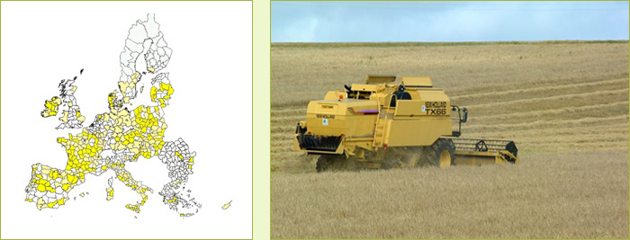

Highlights
- Agriculture uses over 50% of the land
- Agriculture is already a limited economic factor (<
2% GDP)
- Outflow of farm employment continues, but is in absolute
numbers small
- The regional economy is already mainly urban driven
- Bio-energy crops evolve especially in these regions
